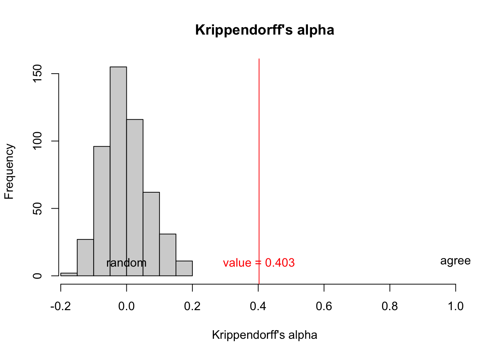
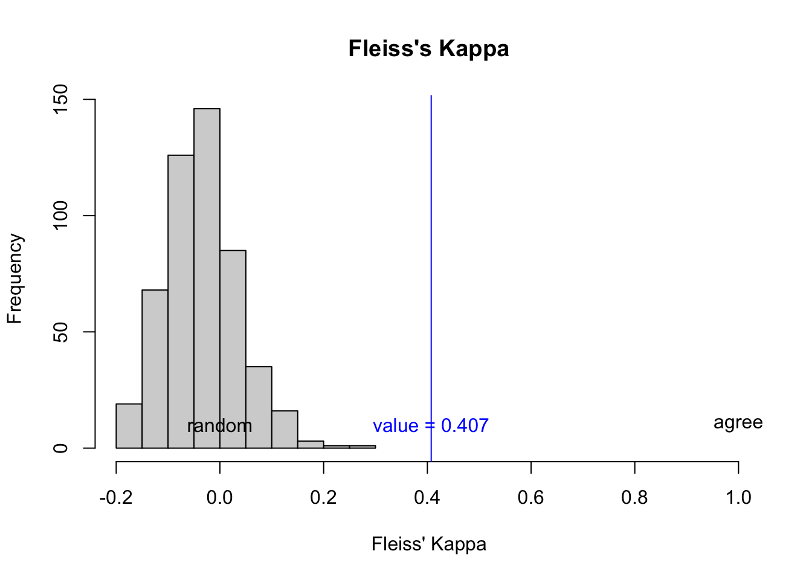

library(irrCAC)
library(tidyverse)Multi-label agreement
Load libraries
(install if you don’t have already)
Define functions to calculate MASI
Show the code defining the functions
#' Parse string into a character vector
#'
#' @param x string, e.g. "label_1, label_2"
#' @param sep separator, e.g. ", "
#'
#' @return character vector of labels, e.g. c("label_1", "label_2")
#' @export
#'
#' @examples
#' elements_from_string("l1, l2, l3", sep = ", ")
elements_from_string <- function(x, sep = ", ") {str_split(x,sep,simplify = F)[[1]]}
#' Measuring Agreement on Set-valued Items (MASI) distance from text string
#' MASI Similarity or Distance (pairwise)
#'
#' @param x Person x string of labels such as "label_1, label_2, label_3"
#' @param y Person y string of labels such as "label_4, label_1, label_5, label_7"
#' @param sep Label separator in the string, default = ", "
#' @param jaccard_only Only return Jaccard index instead of MASI (default = FALSE)
#' @param type one of "dist" or "sim" (default) for a distance or similarity score.
#'
#' @return Jaccard Distance between the two sets
#' @export
#'
#' @examples
#' masi("l1, l2, l3", "l7, l2")
masi <- function(x,y,sep = ", ", jaccard_only = F, type = "sim"){
# Define the labels for each rater
lab_x <- elements_from_string(x)
lab_y <- elements_from_string(y)
# compute set diff and intersection size
diff_xy_size <- length(setdiff(lab_x,lab_y)) # number of elements in set x but not in set y
diff_yx_size <- length(setdiff(lab_y,lab_x)) # number of elements in set y but not in set x
intersection_size <- length(intersect(lab_x,lab_y)) # number of elements in common between two sets
# monotonicity simillarity coefficient, M, see http://www.lrec-conf.org/proceedings/lrec2006/pdf/636_pdf.pdf Rebecca Passonneau. 2006. Measuring Agreement on Set-valued Items (MASI) for Semantic and Pragmatic Annotation. In Proceedings of the Fifth International Conference on Language Resources and Evaluation (LREC’06), Genoa, Italy. European Language Resources Association (ELRA).
m_sim <- case_when(
(diff_xy_size == 0) & (diff_yx_size == 0) ~ 1, # the sets are identical, return 1
(diff_xy_size == 0) | (diff_yx_size == 0) ~ 2/3, # one set is a subset of the other, return 2/3
(diff_xy_size != 0) & (diff_yx_size != 0) & (intersection_size !=0) ~ 1/3, # some overlap, some non-overlap in each set, return 1/3
intersection_size ==0 ~ 0 # disjoint sets, return 0
)
# Calculate Jaccard simmilarity; J=1 means same, J=0 means no overlap at all. See https://en.wikipedia.org/wiki/Jaccard_index
jaccard_sim <- intersection_size/(length(lab_x) + length(lab_y) - intersection_size)
#MASI sim is M*J; MASI dist is 1-M*J
masi_sim <- if_else(jaccard_only,
jaccard_sim,
m_sim*jaccard_sim)
return(if_else(type == "sim",
masi_sim,
1-masi_sim))
}
MASI_simmilarity_matrix <- function(df, sep = ", ") {
labels_all_combos <- sort(unique(unlist(df))) # alphabetical sorted list of all strings of labels
num_label_combos <- length(labels_all_combos) # number of combinations above
masi_sim_mat <- matrix(nrow = num_label_combos,
ncol = num_label_combos,
dimnames = list(labels_all_combos,
labels_all_combos))
for(i in 1:num_label_combos){
for(j in 1:num_label_combos)
{
masi_sim_mat[i,j] <- masi(x = labels_all_combos[i],
y = labels_all_combos[j],
sep = sep)
}}
return(masi_sim_mat)
}Test data
#creating the dataset as dataframe
#you'll want to load in your data frame / tibble from a csv file instead
dataset <- tribble(
~Coder1, ~Coder2, ~Coder3,
"l1, l2", "l1", "l2",
"l1, l2", "l1, l2", "l1, l2",
"l1", "l1", "l1",
"l3", "l3", NA_character_,
"l3", "l1, l3", "l1, l3",
"l4", "l4", "l4",
"l2", "l4", "l5",
"l1, l2", "l1", "l2",
"l1, l2", "l1, l2, l3", "l1, l2, l3, l9",
"l1", "l2, l4", "l1",
"l1", "l1", "l5"
)Calculate Inter-rater reliability
# calculate MASI set difference between each pair of labels
wt <- MASI_simmilarity_matrix(dataset, sep = ", ")
# calculating krippendorff alpha
ka <- krippen.alpha.raw(ratings = dataset,
weights = wt,
categ.labels = rownames(wt),
conflev = 0.95
)
# calculating fleiss' kappa
fk <- fleiss.kappa.raw(ratings = dataset,
weights = wt,
categ.labels = rownames(wt),
conflev = 0.95
)
bind_rows(fk$est,ka$est) coeff.name pa pe coeff.val coeff.se conf.int
1 Fleiss' Kappa 0.5538721 0.2471891 0.40738 0.15383 (0.065,0.75)
2 Krippendorff's Alpha 0.5543077 0.2539822 0.40257 0.15186 (0.064,0.741)
p.value w.name
1 0.02438394 Custom Weights
2 0.02427498 Cutsom WeightsSo Krippendorff’s Alpha is
(kav <- ka$est$coeff.val)[1] 0.40257And the 95% confidence interval is
ka$est$conf.int[1] "(0.064,0.741)"And Fleiss’ Kappa is
(fkv <- fk$est$coeff.val)[1] 0.40738And sampling 500 reshuffles to see what the coefficient looks like:
Code
# "randomly" reshuffled data
reshuffle <- function(df){
df %>%
unlist %>%
{sample(.,size = length(.),replace = F)} %>%
matrix(ncol = ncol(df),
dimnames = list(row.names(df),
names(df))) %>%
as_tibble()
}
#reshuffled <- reshuffle(dataset)
#calculating krippendorff alpha
shuffle_ka_vec = c()
for (i in 1:500){
ka_r <- krippen.alpha.raw(ratings = reshuffle(dataset),
weights = wt,
categ.labels = rownames(wt),
conflev = 0.95
)
shuffle_ka_vec[i] <- ka_r$est$coeff.val
}
#calculating fleiss' kappa
shuffle_fk_vec = c()
for (i in 1:500){
fk_r <- fleiss.kappa.raw(ratings = reshuffle(dataset),
weights = wt,
categ.labels = rownames(wt),
conflev = 0.95
)
shuffle_fk_vec[i] <- fk_r$est$coeff.val
}Plot random reshuffle vs the actual result you got.
Code
hist(shuffle_ka_vec,
xlim = c(min(c(shuffle_ka_vec,kav)),1),
main = "Krippendorff's alpha",
xlab = "Krippendorff's alpha")
abline(v = kav,col="red")
text(x = c(0,kav,1),
y=c(10,10,10),
col=c("black","red","black"),
labels = c("random",paste0("value = ",round(kav,3)),"agree")
)
Code
hist(shuffle_fk_vec,
xlim = c(min(c(shuffle_fk_vec,fkv)),1),
main = "Fleiss's Kappa",
xlab = "Fleiss' Kappa")
abline(v = fkv,col="blue")
text(x = c(0,fkv,1),
y=c(10,10,10),
col=c("black","blue","black"),
labels = c("random",paste0("value = ",round(fkv,3)),"agree")
)